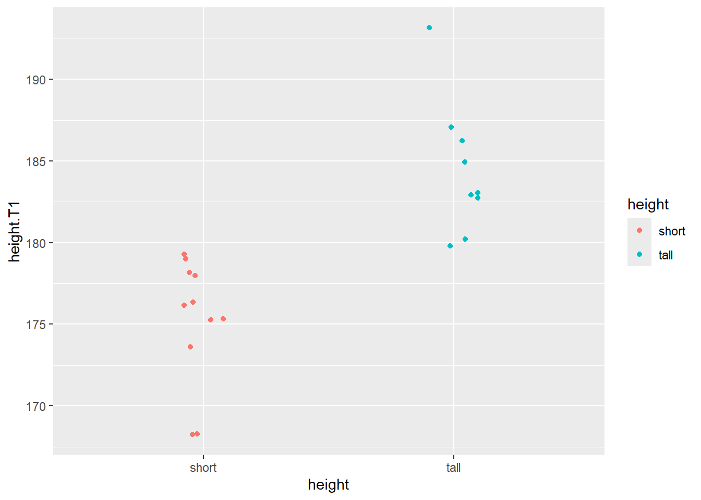
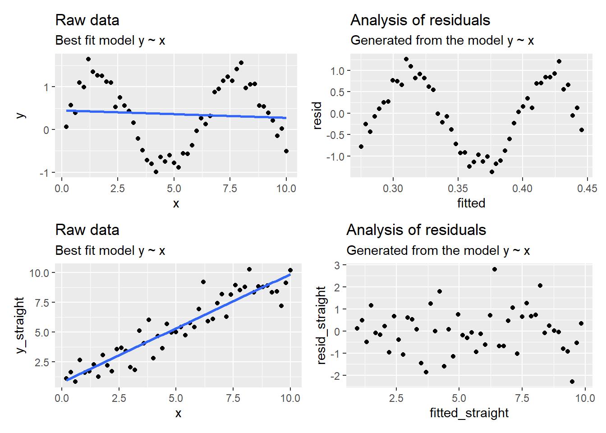
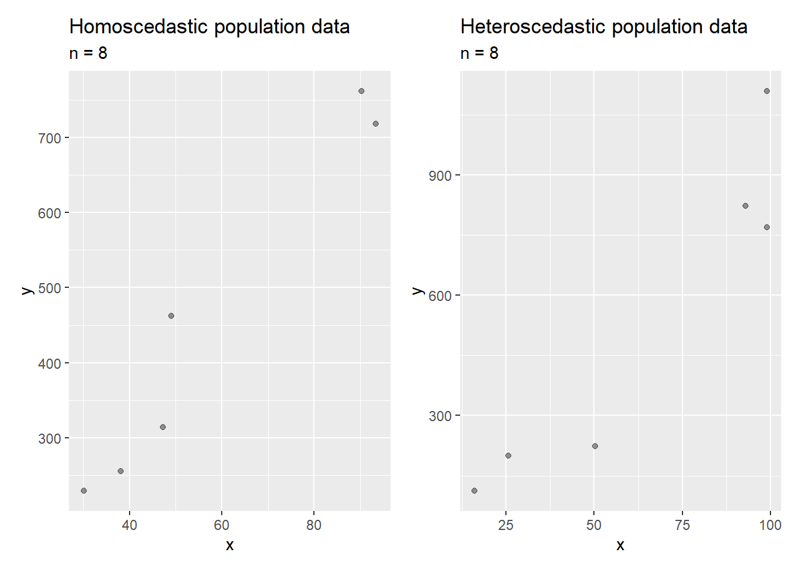
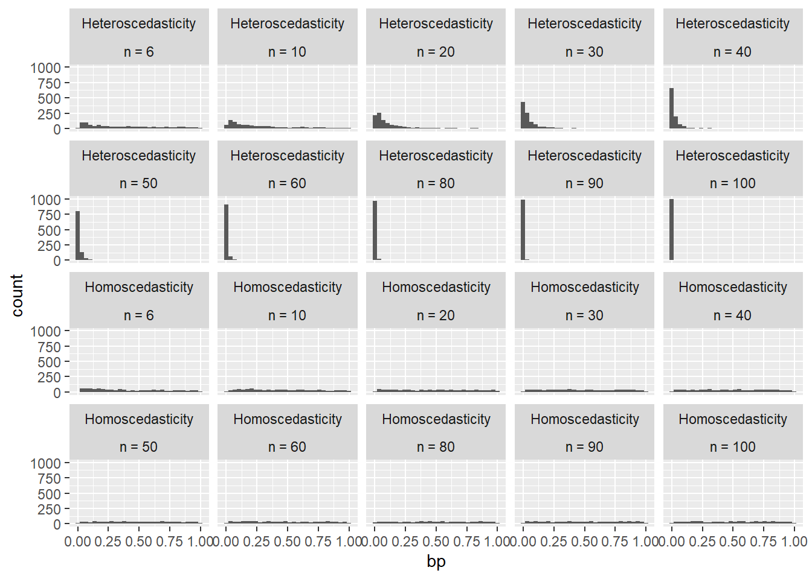
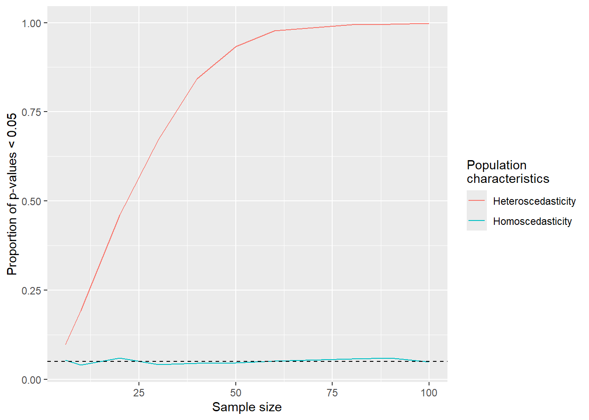
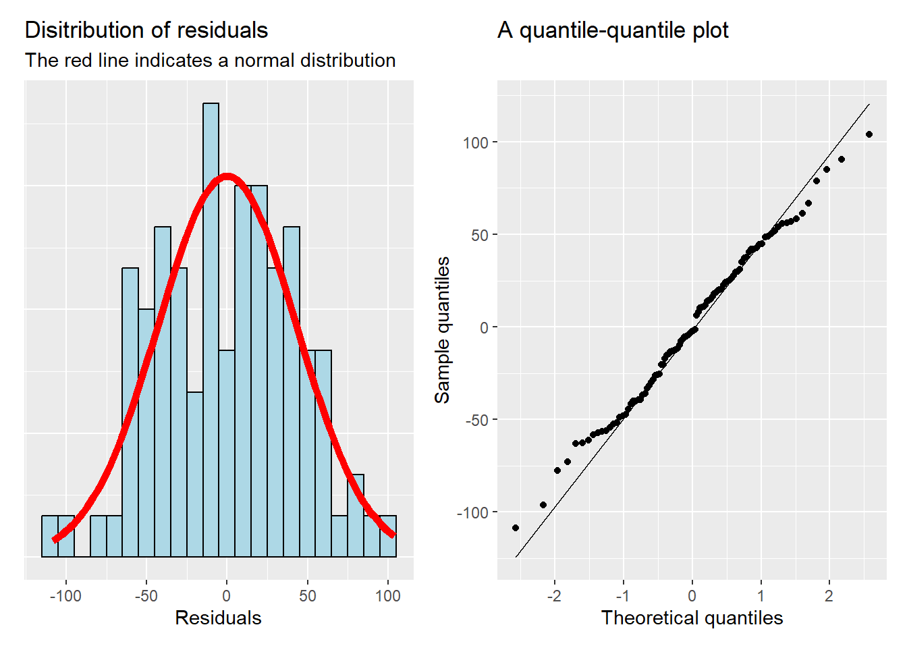
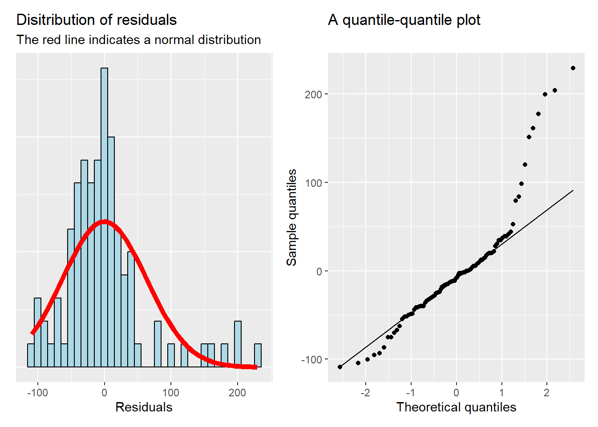

The linear model: Categorical predictors and diagnostics
Categorical predictors
So far we used a continuous predictor variable (\(x\)) in our regression models.
We could replace this with a variable that either takes the value 0 or 1. This could represent a categorical predictor variable, e.g., Group A = 0, Group B = 1.
The model can still be described as
\[y_i = \beta_0 + \beta_1x_{i} + \epsilon_i\] - where \(\beta_0\) is the intercept, \(\hat{y_i}\) when \(x=0\) which will be the average of group A. - The slope, \(\beta_1\) represents the difference between the groups which equals to the change in \(\hat{y}\) for a one-unit change in \(x\).
A bad example!
We will create a bad example of a categorical predictor variable to predict VO2.max with height.T1 in the cyclingstudy data set. Why bad? Let’s find out!
First, let’s dichotomize the height variable into two groups. In our analysis we want to compare the group of “tall” individuals to “short” individuals from the pre time-point.
The threshold for the grouping will be above/below the median height.
In the code chunk below, we add a new variable height which takes the value tall if height.T1 is greater then the median, otherwise “short”. For clarity, we will also convert the variable to a factor variable.
Practice
Based on the description above, and before you look at the example below, write the required commands and save a data set in an object called dat.
Code
library(exscidata); library(tidyverse)data("cyclingstudy")# Reduce the data set dat <- cyclingstudy %>%filter(timepoint =="pre") %>%select(subject, height.T1, VO2.max) %>%mutate(height =if_else(height.T1 >median(height.T1), "tall", "short"), height =factor(height)) %>%print()
This operation results in our new grouping variable as shown in the figure below.

Dichotomizing height into short/tall groups
We may now formulate a model to assess differences in VO2max between height groups.
In the model formulation we will write our factor variable. R will “dummy code” this variable to take the values 0 and 1 in the model.
Dummy coding will translate an ordered factor with two levels to a 0/1 variable where 0 can be called the reference level. Using contrasts(dat$height) we can see the how R has coded the variable. Notice that the variable is called tall.
Fit the model VO2.max ~ height using the dichotomized factor variable for height and calculate the average VO2max for the tall group.
Note: A statistical test for differences in means
It turns out that many commonly used statistical tests can be performed in the regression model framework.1. We will revisit this idea further on but start here with the simple t-test.
The t-test is often the first statistical test taught in a statistics course. The goal is to compare two means (paired- or un-paired observations) or compare a mean to a reference value (one sample t-test).
The t-test provides us with an apparatus to test a statistical hypothesis.
An interpretation of a part of the results from the test, the p-value can be:
If we performed sampling from, and comparison of, two populations 1000 times, how often would we see a result so extreme or more extreme than the observed value, if the null-hypothesis of no difference is true.
If the p-value is low, say below 0.05, we have estimated that the results are pretty unlikely if the null-hypothesis is true (less than 5% of repeated studies will show this result if the null hypothesis is true).
The differences in two means (tall vs. short) in a t-test is the same as the slope in an ordinary regression model:
We use var.equal = TRUE to fully reproduce the results of the regression analysis. This option assumes equal variation in the two groups.
The minus sign in the t-statistic of the t-test indicate that the comparison is reversed in the t-test.
Group work
How do you interpret the model summary of the model VO2.max ~ height using the dichotomized factor variable for height? What does the p-value and slope estimate tell us?
Why was this a bad example: A short lesson on dichotomization
When we dichotomize a variable we add assumptions to our analysis.
In this case, we add an assumption of a non-important relationship between the dependent and independent variable within each group.
This assumption can easily be questioned by creating a plot with height.T1 on the x-axis, VO2.max on the y-axis and different color per grouping.
We could additionally add regression lines using geom_smooth(method = "lm"). Remove the color argument (aes(color = NULL)) from an additional geom_smooth() to include all data in a linear model.
Group work
Try to create the graph based on the description above (before peeking at a possible solution below). Can we reasonably neglect the linear relationship between variables within groups?
A possible solution
dat %>%ggplot(aes(height.T1, VO2.max, color = height)) +geom_point() +geom_smooth(method ="lm") +geom_smooth(method ="lm", aes(color =NULL))
Since we are actually removing data before fitting the model we also create a model that is difficult to interpret.
Group work
Interpret the estimates from
a model with height treated as a dichotomized variable
a model with height included as a continuous variable.
Explain to your friend what the estimate tells you about the real-world relationship between VO2max and height from each model.
A possible solution
# Dichotomized datam1 <-lm(VO2.max ~ height, data = dat)# Contentious datam2 <-lm(VO2.max ~ height.T1, data = dat)summary(m1);summary(m2)
Assumptions and diagnostics
A linear regression model comes with a set of assumptions, these concern
The sampling of data
The relationship between variables
The resulting errors of the model
Data sampling
*A single row of a data set, possibly containing multiple variables.
When collecting data for a regression analysis we must make sure that each observation* is independent.
This means that the ordinary regression model cannot account for multiple observations sampled from the same individual.
If this is done, we commit a crime called pseudo-replication!
This can also be the case if we sample individuals that are structured together in teams or classrooms etc.
More elaborate models are needed to account for such structures in the data.
Group work
Interpret the estimates from a model with height treated as a continuous variable but containing all time-points. Compare the results to the previous model containing data only from timepoint == "pre"
Discuss how this changes the standard error (Std Error) of the model.
Notice that height was only recorded at pre, to fill height data to all observations:
cyclingstudy %>%select(subject, timepoint, height.T1, VO2.max) %>%## To get height at all time-pointsgroup_by(subject) %>%mutate(height.T1 =mean(height.T1, na.rm =TRUE)) %>%ungroup()
A possible solution
dat.all <- cyclingstudy %>%select(subject, timepoint, height.T1, VO2.max) %>%## To get height at all time-pointsgroup_by(subject) %>%mutate(height.T1 =mean(height.T1, na.rm =TRUE)) %>%ungroup() %>%print()# Contentious data, all observationsm1 <-lm(VO2.max ~ height.T1, data = dat.all)# Contentious data, only pre-datam2 <-lm(VO2.max ~ height.T1, data = dat)summary(m1);summary(m2)
Straight lines
The regression model expects straight-line relationships.
Curve-linear relationships needs more elaborate model formulations.
If the underlying data has some curve linear characteristics, a residual plot will aid in detecting it.
Code
# create some fake, non-linear dataa <-0.2b <-1x <-seq(from =0.2, to =10, by =0.2)# Adding curve-linear relationship# and random error to each data pointy <- a + b*sin(x) +rnorm(length(x), 0, 0.2) y_straight <- a + b*x +rnorm(length(x), 0, 1) # Store in data framefake <-data.frame(x = x, y = y, y_straight = y_straight)# Plot the raw data, including a modelraw_data_plot_sig <- fake %>%ggplot(aes(x, y)) +geom_point() +geom_smooth(method ="lm", se =FALSE) +labs(title ="Raw data",subtitle ="Best fit model y ~ x")raw_data_plot_straight <- fake %>%ggplot(aes(x, y_straight)) +geom_point() +geom_smooth(method ="lm", se =FALSE) +labs(title ="Raw data",subtitle ="Best fit model y ~ x")# Model the data with a straight linem <-lm(y ~ x, data = fake)m_straight <-lm(y_straight ~ x, data = fake)# Extract residuals fake$resid <-resid(m)fake$resid_straight <-resid(m_straight)# Extract predicted/fitted valusfake$fitted <-fitted(m)fake$fitted_straight <-fitted(m_straight)# Plot fitted vs. residual valuesresidual_plot_sig <- fake %>%ggplot(aes(fitted, resid)) +geom_point() +labs(title ="Analysis of residuals", subtitle ="Generated from the model y ~ x")residual_plot_straight <- fake %>%ggplot(aes(fitted_straight, resid_straight)) +geom_point() +labs(title ="Analysis of residuals", subtitle ="Generated from the model y ~ x")# Using patchwork to arrange plotslibrary(patchwork)(raw_data_plot_sig + residual_plot_sig) / (raw_data_plot_straight + residual_plot_straight)

Modelling a curve linear vs. a linear relationship using a straight line
Group work
Explain to a friend:
What is the difference between the raw data and the residual vs. fitted plot?
What can go wrong when we assume linear relationships?
How can we diagnose the model and know what to expect when fitting it?
Model errors
Above we clearly identified patterns in the residual plot that violated the assumption of a straight line (or linear) relationship between variables.
Another assumption can also be assessed using the residual plot (residuals vs. fitted values).
This assumption is that errors are equally distributed across the fitted values.
In the case of a continuous predictor, the spread of the residuals should vary similarly across the whole range of fitted values.
In the case of a categorical variable, residuals should have similar spread in all categories.
Let’s examine the models formulated above with height, both as a categorical predictor as well as a continuous predictor.
Group work
Fit the models, only containing the pre data
Save the residuals to your data set using resid(mod), where mod is the model object
Similarly, save the fitted values to your data set using fitted(mod).
Create a ggplot of the fitted (x axis) and residual values (y axis).
Interpret the resulting plots.
A possible solution
# Continuous variablem1 <-lm(VO2.max ~ height.T1, data = dat)# Categorical variable m2 <-lm(VO2.max ~ height, data = dat)# Retreive fitted and residual valuesdat$fitted_cont <-fitted(m1)dat$resid_cont <-resid(m1)dat$fitted_cat <-fitted(m2)dat$resid_cat <-resid(m2)# Create figuresresid_plot_cont <- dat %>%ggplot(aes(fitted_cont, resid_cont)) +geom_point() +labs(title ="Continous predictor")resid_plot_cat <- dat %>%ggplot(aes(fitted_cat, resid_cat)) +geom_point()+labs(title ="Categoricals predictor")# Using patchwork to combine the figureslibrary(patchwork)resid_plot_cont + resid_plot_cat
It is not always easy to tell if there is heteroscedasticity, especially with small number of observations.
The graphical method is convenient to use, but there are also tests to detect it. One such test is Breusch–Pagan test.
In the figure below, two scenarios are presented, one homoscedastic and one heteroscedastic scenario.
Homoscedasticity vs. heteroscedasticity
It may be difficult to detect heteroscedasticity from a single model created with a small sample size.

Sampling data from population data with equal vs. unequal variation across x-values.
In fact, graphical analysis and formal tests of population characteristics are dependent on the sample size.
A larger sample size will more often detect heteroscedasticity in the population data.

Sampling data with different sizes from population data with equal vs. unequal variation across x-values and comparing p-values from a test of homoscedasticity.

Sampling data with different sizes from population data with equal vs. unequal variation across x-values and plotting the ability to detect violoations of equal variance.
If we detect violations of the assumption of equal variation across the fitted values we can attempt transformations.
The log-transformation can be used when the variance increases with larger values (positive correlation between fitted values and variance).
Note that log transformation of the dependent variable changes the interpretation of the model. Instead of additive, we evaluate the multiplicative effect. For a unit difference in x, y changes by a percentage.
Code
# create some fake, non-linear dataset.seed(10)a <-20b <-15x <-seq(from =5, to =20, by =0.2)# and random error to each data pointy <- a + b*x +rnorm(length(x), 0, 2*x) # Store in data framefake <-data.frame(x = x, y = y)# Plot the raw data, including a modelraw_data_plot <- fake %>%ggplot(aes(x, y)) +geom_point() +geom_smooth(method ="lm", se =FALSE) +labs(title ="Raw data",subtitle ="Best fit model y ~ x")raw_data_plot_log <- fake %>%ggplot(aes(x, log(y))) +geom_point() +geom_smooth(method ="lm", se =FALSE) +labs(title ="Raw data",subtitle ="Best fit model log(y) ~ x")# Model the data with a straight linem <-lm(y ~ x, data = fake)logm <-lm(log(y) ~ x, data = fake)# Test for heteroscedasticitybp_m <- lmtest::bptest(m)bp_logm <- lmtest::bptest(logm)# Extract residuals fake$resid <-resid(m)fake$residlog <-resid(logm)# Extract predicted/fitted valusfake$fitted <-fitted(m)fake$fittedlog <-fitted(logm)# Plot fitted vs. residual valuesresidual_plot <- fake %>%ggplot(aes(fitted, resid)) +geom_point() +labs(title ="Analysis of residuals", subtitle ="Generated from the model y ~ x", caption =paste0("Breusch–Pagan test p-value: ", round(bp_m$p.value, 5))) residual_plot_log <- fake %>%ggplot(aes(fittedlog, residlog)) +geom_point() +labs(title ="Analysis of residuals", subtitle ="Generated from the model log(y) ~ x", caption =paste0("Breusch–Pagan test p-value: ", round(bp_logm$p.value, 3)))# Using patchwork to arrange plotslibrary(patchwork)(raw_data_plot + residual_plot) / (raw_data_plot_log + residual_plot_log)
Dealing with heteroscedasticity using log-transformation of the data
Normal errors
I addition the assumption of errors being equally distributed (homoscedasticity), we also assume that they are normally distributed.
This is also conveniently evaluated graphically using a histogram of the residuals and a qq-plot.

Assessing normality of residuals using graphical methods
The qq-plot indicates deviations from the normal distribution as points that fall far away from the line deviates from a theoretical distribution.
Deviations from the assumption of normal residuals may be due to a number of “outliers”.
Let’s add 200 to 6 observations from the previous diagnostic plots and re-fit the model.

Assessing normality of residuals using graphical methods with 6 observations inflated by 200 units
Interpreting the output from plot(model)
R has nice built in functions for graphical assessment of regression models
After fitting a model, simply use plot(model)
The resulting plots are similar to what we have examined so far
# Copy and run the code on your own!dat <- cyclingstudy %>%filter(timepoint =="pre") %>%select(subject, height.T1, VO2.max) m <-lm(VO2.max ~ height.T1, data = dat)plot(m)
The first plot is the ordinary Residuals vs. Fitted plot that we created above. Here we can assess the assumption regarding homoscedasticity.
The second plot is a Q-Q plot where we can assess the assumption regarding normality of the residuals
The third plot provides a slightly different version of the residual vs. fitted plot. Scale-location has the advantage of showing absolute values, this may make it easier to detect heteroscedasticity.
The forth plot contains residuals vs. leverage where leverage indicates influential data points.
An influential data point has a lot of influence on the regression model. Let’s see how.
Code
dat2 <- dat %>%mutate(added ="NO") %>%add_row(subject =200, height.T1 =200, VO2.max =7000, added ="YES")m <-lm(VO2.max ~ height.T1, data = dat2) raw_data <- dat2 %>%ggplot(aes(height.T1, VO2.max, color = added)) +geom_point() +geom_smooth(method ="lm", se =FALSE) +geom_smooth(method ="lm", aes(color =NULL), se =FALSE) +labs(title ="An influential data point added")### These functions are needed to plot the cooks distancecd_cont_pos <-function(leverage, level, model) {sqrt(level*length(coef(model))*(1-leverage)/leverage)}cd_cont_neg <-function(leverage, level, model) {-cd_cont_pos(leverage, level, model)}leverage_plot <-data.frame(leverage =hatvalues(m), scaled.resid =resid(m)/sd(resid(m)), Added = dat2$added) %>%ggplot(aes(leverage, scaled.resid, fill = Added)) +geom_point(shape =21, size =2) +stat_function(fun = cd_cont_pos, args =list(level =0.5, model = m), xlim =c(0, 0.5), lty =2, colour ="red") +stat_function(fun = cd_cont_neg, args =list(level =0.5, model = m), xlim =c(0, 0.5), lty =2, colour ="red") +stat_function(fun = cd_cont_pos, args =list(level =1, model = m), xlim =c(0, 0.5), lty =1, colour ="red") +stat_function(fun = cd_cont_neg, args =list(level =1, model = m), xlim =c(0, 0.5), lty =1, colour ="red") +scale_y_continuous(limits =c(-2, 2.5)) +labs(x ="Leverage", y ="Standardized residuals", title ="Identifying an influential data point", subtitle ="Cook's distance indicated by red lines")raw_data + leverage_plot
Homoscedasticity, heteroscedasticity, equal variance, normality of residuals
Pseudo-replication
Multiple linear regression
The ordinary linear model is easily extended to include more predictor variables.
In fact, when we add a categorical variable with more than 2 levels, we effectively perform multiple regression.
Let’s say that we want to estimate the differences in change in VO2max (ml min-1) between the three groups in the cycling study data set (see figure).
Code
library(ggtext) # needed to use markdown in legends/axis textscyclingstudy %>%select(subject, group, timepoint, VO2.max) %>%pivot_wider(names_from = timepoint, values_from = VO2.max) %>%mutate(change = meso3 - pre) %>%ggplot(aes(group, change)) +geom_boxplot() +labs(y ="VO<sub>2max</sub> (ml min<sup>-1</sup>) change from pre to meso3", x ="Group", title ="Absolute change in maximal aerobic power") +theme(axis.title.y =element_markdown())
Changes in VO2max from pre to meso3 in three groups in the cycling study data set
When R dummy codes the factor variable group, DECR will be the reference level. A coefficient will be used to indicate each of the other two groups (INCR and MIX).
This can be written as
change = intercept + group2 + group3 + error
or
\[\hat{y_i} = \beta_0 + \beta_1x_1 + \beta_2x_2 + \epsilon_i\] - If e.g., \(x_1\) is 0, then \(\beta_1\) drops from the equation, otherwise it is added to the estimate. - Let’s fit the model (copy the code in to your own session).
Code
dat <- cyclingstudy %>%select(subject, group, timepoint, VO2.max) %>%pivot_wider(names_from = timepoint, values_from = VO2.max) %>%mutate(change = meso3 - pre) %>%print()m <-lm(change ~ group, data = dat)# Use summary to retrieve the resultssummary(m)
Review your understanding
Look at the figure, and the output from the model.
Explain the estimates for (Intercept), groupINCR and groupMIX.
The order of the factor variable group determines the reference level. Change the reference level to MIX using mutate(group = factor(group, levels = c("MIX", "DECR", "INCR")))
Fit a new model and reinterpret the results.
A possible solution
dat <- cyclingstudy %>%select(subject, group, timepoint, VO2.max) %>%pivot_wider(names_from = timepoint, values_from = VO2.max) %>%mutate(change = meso3 - pre, group =factor(group, levels =c("MIX", "DECR", "INCR"))) %>%print()m <-lm(change ~ group, data = dat)# Use summary to retrieve the resultssummary(m)
The interpretation of model coefficients in multiple linear regression is the effect when the other coefficients are held constant (at zero).
Review your understanding
Select two or more variables (continuous or categorical) from the cyclingstudy data set and fit a model.
Interpret the results.
The hypertrophy data set
Haun et al. (2019) investigated the predictors of responses to a resistance training intervention
The composite score of muscle hypertrophy is calculated as:
right leg VL muscle thickness assessed via ultrasound
upper right leg lean soft tissue assessed via DXA
right leg mid-thigh circumference
right leg VL mean (type I and type II) muscle fCSA.
Identify variables of interest (e.g. strength or muscle mass gains) and explain the using a regression model with a selected set of predictor variables.
References
Haun, C. T., C G. Vann, C. Brooks Mobley, Shelby C. Osburn, Petey W. Mumford, Paul A. Roberson, Matthew A. Romero, et al. 2019. “Pre-Training Skeletal Muscle Fiber Size and Predominant Fiber Type Best Predict Hypertrophic Responses to 6 Weeks of Resistance Training in Previously Trained Young Men.” Journal Article. Frontiers in Physiology 10 (297). https://doi.org/10.3389/fphys.2019.00297.
Footnotes
See Common statistical tests are linear models https://lindeloev.github.io/tests-as-linear/↩︎